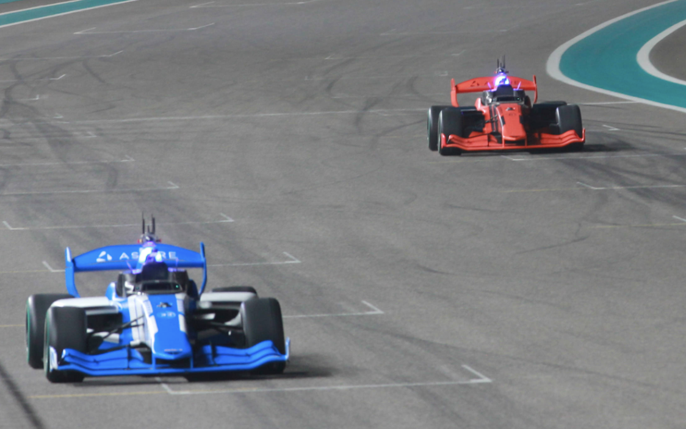
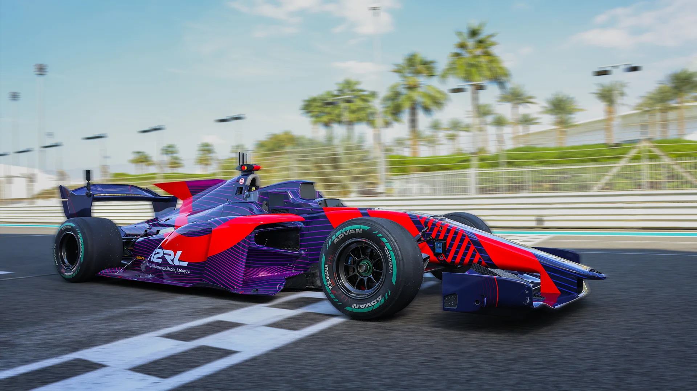
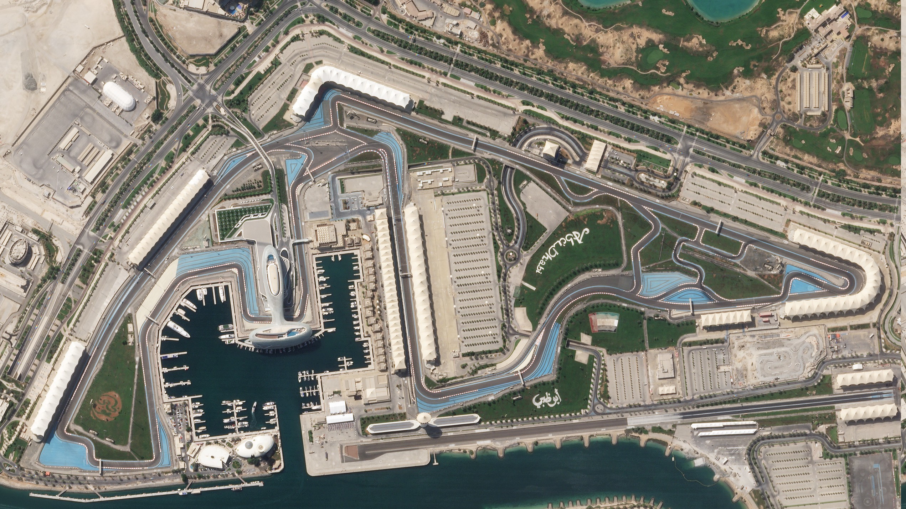
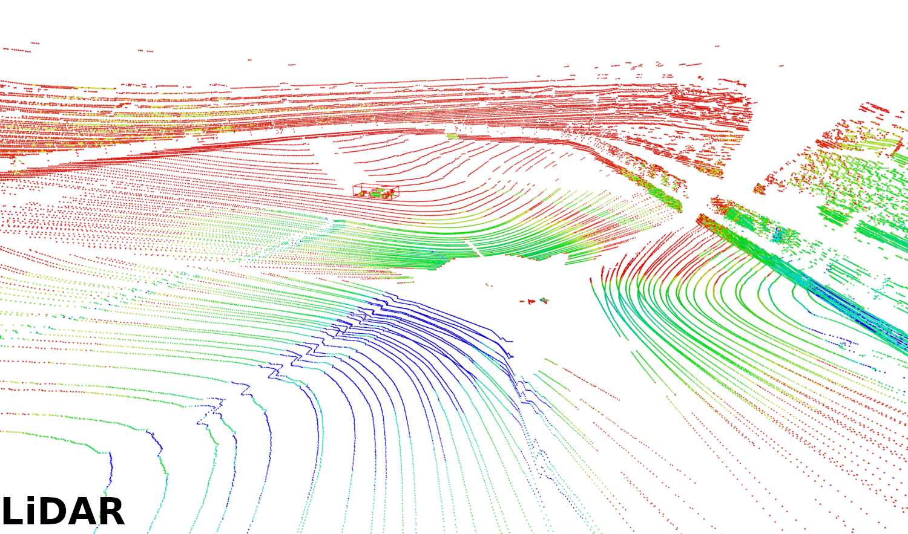
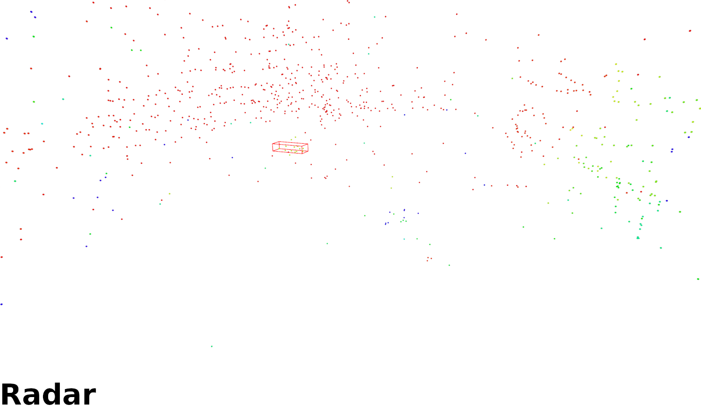

Localization

Data from time-trial, attack-and-defend, and the final four-vehicle race at Yas Marina F1 Circuit.
Multi-vehicle interaction data curated for detection, tracking, and future prediction tasks.
Includes 28,791 professionally annotated frames and 38,545 vehicle bounding boxes.
Complementary long-range sensing for extreme-speed perception research.
Competition data shared across participating teams to build a common research benchmark.
Designed for straightforward training and evaluation with existing 3D detection and tracking tooling.
A2RL Vmax is an open-source perception dataset built for high-speed autonomous driving and multi-vehicle racing interaction. The data was captured during the 2024 Abu Dhabi Autonomous Racing League at the Yas Marina F1 Circuit and covers both single-vehicle sessions at varying speeds and competitive multi-vehicle race scenarios.
The dataset contains nearly 30,000 professionally annotated LiDAR point clouds together with RADAR point clouds, making it the first large-scale autonomous racing dataset of this kind to support deep-learning-based perception research with dense expert labels.
To make the dataset practical for future work, the authors provide the data in a developer-friendly format and benchmark off-the-shelf 3D detection and tracking methods, showing that while standard baselines perform reasonably well at short range, specialized methods are still needed for long-range, high-speed racing conditions.







The dataset focuses on long-range perception and multi-vehicle interaction under genuine racing constraints rather than everyday road traffic.
A2RL Vmax provides large-scale expert labels for 3D perception research in autonomous racing.
The paper includes baseline detection and tracking results and packages the data in a nuScenes-compatible format.
@inproceedings{klemp2026a2rlvmax,
title={A2RL Vmax: The A2RL autonomous racing dataset for long-range, high-speed perception and multi-vehicle interaction},
author={Klemp, Marvin and Ebner, Dominic and Schr{\"o}der, Cornelius and Malvezzi, Davide and Tur{\'a}nyi, L{\'a}szl{\'o} and Donati, Riccardo and Schminik, Ilia and Ning, Xia and Zhou, Yanxin and Flagg, Matthew and Stiller, Christoph and Lienkamp, Markus and Bertogna, Marko and B{\'a}ri, Gergely and Birk, Andreas and Jin, Ren and Lv, Chen and Betz, Johannes},
booktitle={IEEE/RSJ International Conference on Intelligent Robots and Systems (IROS)},
year={2026},
url={https://tum-avs.github.io/A2RL_Dataset_website/}
}